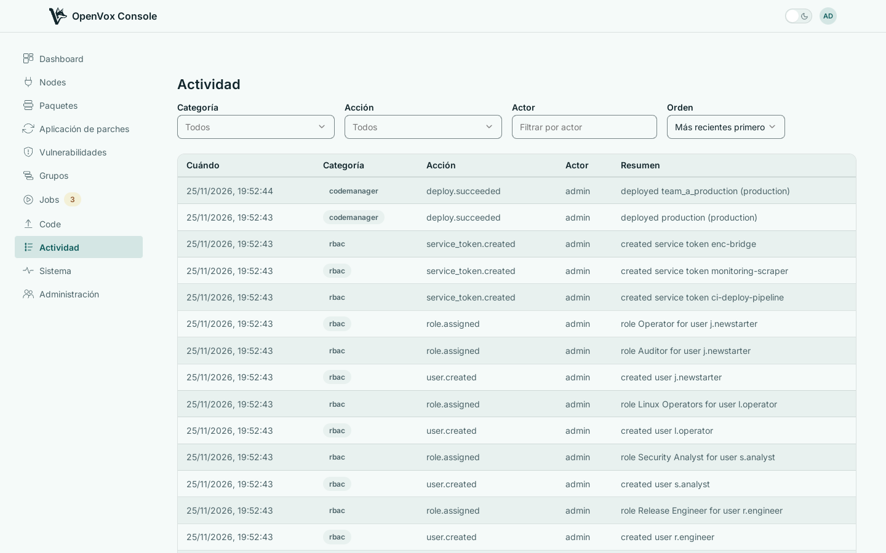

Inicie la sesión de las personas mediante el proveedor de identidad que ya tiene, dé a cada una exactamente el acceso que necesita, dé a su automatización sus propias credenciales y guarde un registro de cada cambio.
Inicio de sesión único, con roles que siguen a sus grupos
La consola inicia la sesión de las personas mediante OpenID Connect, así que las cuentas, las contraseñas y las reglas de autenticación multifactor siguen donde ya están. Los grupos que su proveedor pone en el ID token de una persona se asignan a roles de la consola cada vez que inicia sesión: cambie a alguien de grupo y su acceso en la consola cambiará en su siguiente inicio de sesión.
Esa asignación nunca toca un rol que usted asigna a mano, y las cuentas locales siguen funcionando junto al inicio de sesión único, como acceso de emergencia cuando el proveedor no está disponible.
Los roles son conjuntos de permisos
Un rol es una lista con nombre de permisos: leer Nodes, desplegar código, ejecutar orquestación, gestionar proveedores de vulnerabilidades. Asigne a una persona un rol o varios. Verá las partes de la consola que cubren sus roles, y nada más: ningún botón que falle al pulsarlo.

Un acceso que se detiene en los Nodes y Tasks que debe
Un rol se aplica a los grupos de Nodes que indique, así que un operador puede actuar sobre la capa web y nada más, y solo ve esos Nodes en cada lista, Report y Job. Un rol también puede limitarse a Tasks concretos, o a los Tasks de un módulo, de modo que quien puede aplicar parches no pueda ejecutar nada más.
Dé roles a un grupo de usuarios y todos sus miembros los recibirán, junto con los que tengan directamente. Una política de cuentas define reglas de contraseña y bloquea una cuenta tras varios inicios de sesión fallidos.
Un registro de auditoría que da nombres
Cada entrada registra quién lo hizo y cuándo, así que «quién cambió este grupo» es una pregunta con respuesta. El trabajo hecho por una tarea programada o por la propia consola se muestra exactamente como tal, en lugar de achacarse a una cuenta de relleno.


Las sesiones son de corta duración y se renuevan en segundo plano, así que un token filtrado deja de funcionar por sí solo. Cuando necesita sacar a alguien de inmediato, revocar su sesión surte efecto en todas las instancias de la consola a la vez, en lugar de esperar a que caduque.
Hágalo
Dé acceso a las personas mediante roles y permisos, inicie sesión con su proveedor de identidad y emita tokens para programas.
OpenVox Console se distribuye como imágenes de contenedor, compiladas para amd64 y arm64 en cada push, y como un único binario. Las guías de instalación le llevan de un host vacío a un despliegue funcional (openvoxserver, openvoxdb, Postgres y la consola) con contenedores o con paquetes.